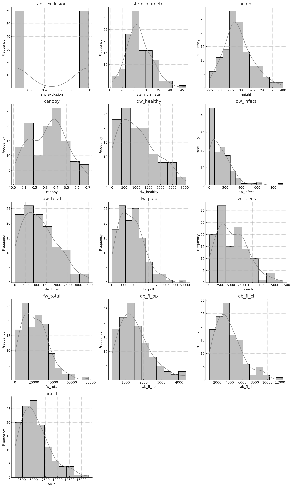
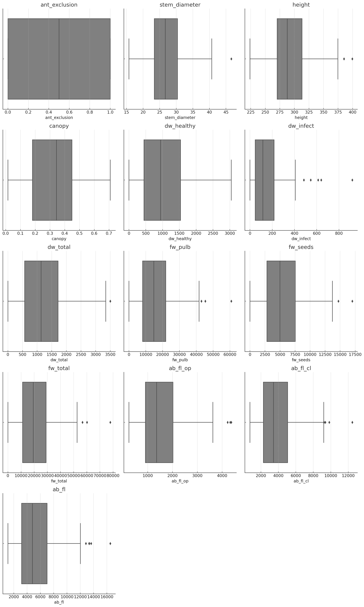
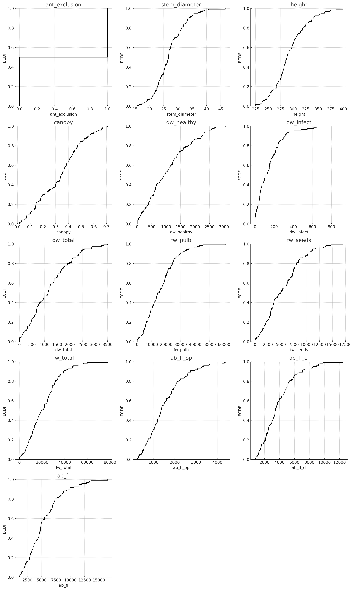
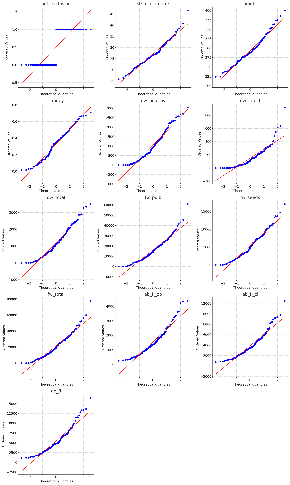
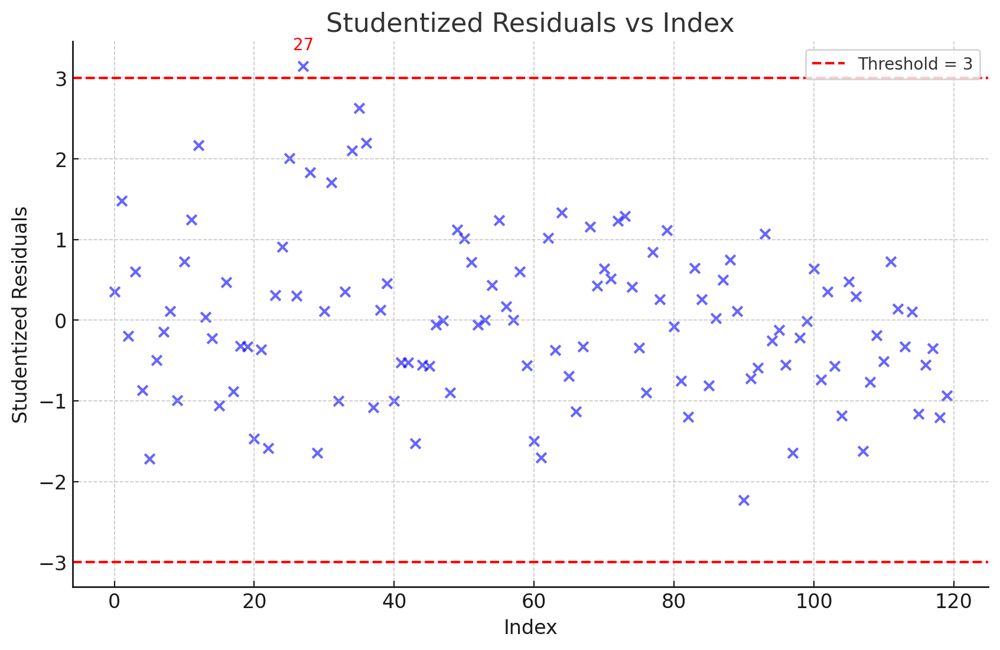
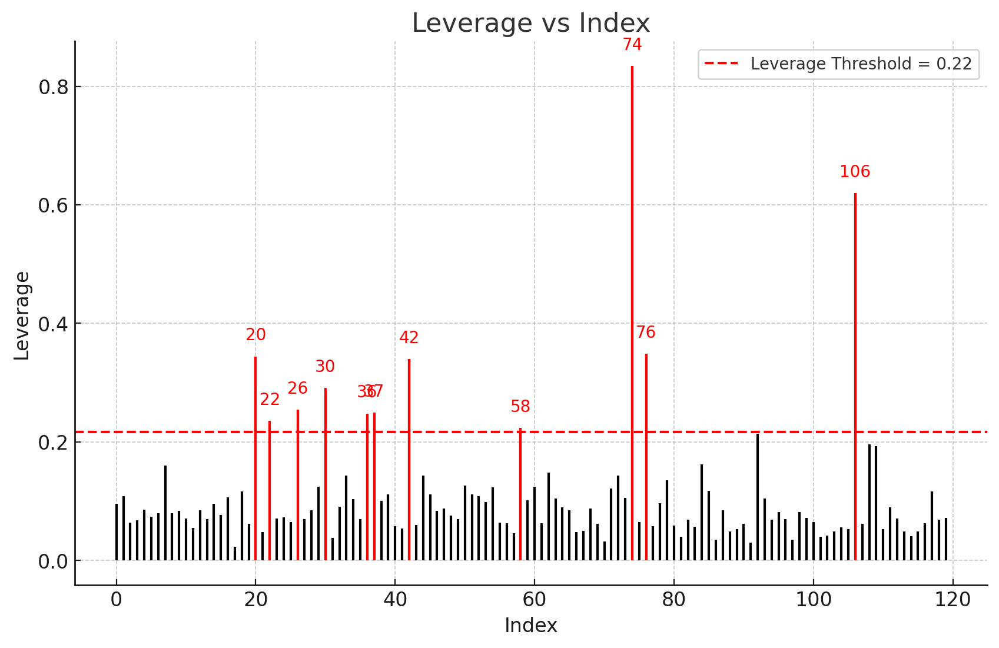

Descriptive statistics are a set of brief descriptive coefficients that summarize a given data set, which can be either a representation of the entire population or a sample of a population. These statistics are broken down into measures of central tendency and measures of variability (spread).
Measures of Central Tendency: These measures indicate the central point of a data set. They include:
Measures of Variability (Spread): These measures describe the dispersion within a data set. They include:
Descriptive statistics provide simple summaries about the sample and the measures. They form the basis of virtually every quantitative analysis of data. By using descriptive statistics, you can understand the basic features of the data and get a quick overview of the data set.
| ant_exclusion | stem_diameter | height | canopy | dw_healthy | dw_infect | dw_total | fw_pulb | fw_seeds | fw_total | ab_fl_op | ab_fl_cl | ab_fl | |
| count | 120 | 120 | 120 | 120 | 120 | 120 | 120 | 120 | 120 | 120 | 120 | 120 | 120 |
| mean | 0.5 | 27.0966 | 293 | 0.329775 | 1054.78 | 149.55 | 1203.53 | 16239.7 | 5404.45 | 21617.6 | 1550.13 | 3910.92 | 5452.61 |
| std | 0.502096 | 5.30599 | 34.6056 | 0.173708 | 750.21 | 146.953 | 824.982 | 10796.7 | 3541.42 | 14236.2 | 904.836 | 2230.83 | 3106.13 |
| min | 0 | 15.7375 | 223.75 | 0.015 | 0 | 0 | 0 | 0 | 0 | 0 | 241 | 741 | 1114 |
| 25% | 0 | 23.375 | 270.375 | 0.18125 | 447.25 | 46.75 | 573.25 | 8083.5 | 2824.25 | 11107.2 | 905.25 | 2277.5 | 3178.25 |
| 50% | 0.5 | 26.7125 | 287.875 | 0.344167 | 939.5 | 116 | 1135 | 14767 | 4983 | 19292 | 1360 | 3440.5 | 4798 |
| 75% | 1 | 30.3656 | 313.188 | 0.449167 | 1536 | 216.5 | 1717.5 | 21869.2 | 7544.5 | 29008.2 | 2018.75 | 5053.25 | 7006.75 |
| max | 1 | 46.6 | 399.5 | 0.708333 | 3045 | 920 | 3500 | 60787 | 17025 | 77812 | 4369 | 12469 | 16501 |
Let's break down the summary statistics for each column in the dataset:
Count: This represents the number of observations in each column. For all columns, the count is 120, indicating that there are 120 data points for each variable.
Mean: This is the average value of each column. For example, the mean of the stem_diameter is approximately 27.10, which means that the average stem diameter in the dataset is 27.10 units.
Standard Deviation (std): This measures the amount of variation or dispersion in the dataset. A higher standard deviation indicates more spread out data. For instance, the fw_pulb has a standard deviation of 10796.7, suggesting a wide range of values around the mean.
Minimum (min): This is the smallest value in each column. For example, the minimum height is 223.75, indicating the shortest height recorded in the dataset.
25th Percentile (25%): Also known as the first quartile, this is the value below which 25% of the data falls. For canopy, 25% of the data is below 0.18125.
Median (50%): This is the middle value when the data is ordered. It is also known as the second quartile. For dw_healthy, the median is 939.5, meaning half of the data points are below this value.
75th Percentile (75%): Also known as the third quartile, this is the value below which 75% of the data falls. For fw_seeds, 75% of the data is below 7544.5.
Maximum (max): This is the largest value in each column. For example, the maximum ab_fl is 16501, indicating the highest value recorded for this variable.
These summary statistics provide a quick overview of the dataset, helping to understand the central tendency, spread, and range of the data.
Let's go through your questions about histograms:
What are histograms?
What are the components of a histogram?
How do I interpret a histogram?
Now, let's create histograms for each variable in the dataset using the specified style.
Here are the histograms for each variable in the dataset. Each plot shows the distribution of data points for a specific variable, with the bars representing the frequency of data points within each bin. The smooth curve overlaid on each histogram is the Kernel Density Estimate (KDE), which provides a continuous probability density function to help visualize the distribution's shape.
Let's explore your questions about boxplots:
What are boxplots?
What are the components of a boxplot?
How do I interpret a boxplot?
Now, let's create boxplots for each variable in the dataset using the specified style.
Here are the boxplots for each variable in the dataset. Each plot provides a visual summary of the data's distribution, highlighting the median, quartiles, and potential outliers. The gray boxes represent the interquartile range (IQR), with the line inside indicating the median. Whiskers extend to the smallest and largest values within 1.5 times the IQR, and any points outside this range are considered outliers.
Let's explore your questions about ECDF plots:
What are ECDF plots?
What are the components of an ECDF plot?
How do I interpret an ECDF plot?
Now, let's create ECDF plots for each variable in the dataset using the specified style.
Here are the ECDF plots for each variable in the dataset. Each plot shows the cumulative distribution of data points, with the X-axis representing the data values and the Y-axis representing the cumulative proportion of observations. The steps in the plot indicate the cumulative proportion of data points up to each value, providing a visual representation of the data's distribution.
Let's explore your questions about Q-Q plots:
What are Q-Q plots?
What are the components of a Q-Q plot?
How do I interpret a Q-Q plot?
Now, let's create Q-Q plots for each variable in the dataset using the specified method.
Here are the Q-Q plots for each variable in the dataset. Each plot compares the quantiles of the dataset to the quantiles of a normal distribution. The red line represents the theoretical distribution, and the blue points represent the data. If the data follows a normal distribution, the points should closely follow the red line. Deviations from this line indicate departures from normality, such as skewness or heavy tails.
Multiple linear regression is a statistical technique used to model the relationship between one dependent variable and two or more independent variables. It extends simple linear regression by allowing for multiple predictors, providing a way to understand how each independent variable contributes to the dependent variable.
In multiple linear regression, the model can be expressed as:
\( y_i = \beta_0 + \beta_1 x_{i1} + \beta_2 x_{i2} + \cdots + \beta_p x_{ip} + \epsilon_i \)
Where:
Linearity: The relationship between the dependent variable and the independent variables is linear. Mathematically, this is expressed as:
\( y_i = \beta_0 + \beta_1 x_{i1} + \beta_2 x_{i2} + \cdots + \beta_p x_{ip} + \epsilon_i \)
Independence: The residuals (errors) are independent. This means that the error term \( \epsilon_i \) for one observation is not correlated with the error term \( \epsilon_j \) for another observation.
Homoscedasticity: The variance of the residuals is constant across all levels of the independent variables. Mathematically, this is expressed as:
\( \text{Var}(\epsilon_i) = \sigma^2 \quad \text{for all } i \)
Normality: The residuals are normally distributed. This assumption is important for hypothesis testing and constructing confidence intervals. Mathematically, this is expressed as:
\( \epsilon_i \sim \mathcal{N}(0, \sigma^2) \)
No Multicollinearity: The independent variables are not perfectly correlated with each other. This means that no independent variable is a perfect linear function of one or more other independent variables.
Regression diagnostics refer to the process of evaluating the validity and reliability of a regression model. This involves examining the assumptions underlying the model, assessing the quality of the fit, and identifying any potential issues that could affect the model's performance or interpretation. The goal of regression diagnostics is to ensure that the model accurately represents the data and provides meaningful insights.
Key aspects of regression diagnostics include:
Model Assumptions: Checking whether the assumptions of the regression model, such as linearity, independence, homoscedasticity, and normality, hold true for the data.
Model Fit: Evaluating how well the model explains the variability in the dependent variable, often through measures of goodness-of-fit.
Influential Data Points: Identifying observations that have a disproportionate impact on the model's estimates, which could skew results or lead to incorrect conclusions.
Residual Analysis: Analyzing the residuals (differences between observed and predicted values) to detect patterns or anomalies that might indicate problems with the model.
Overall, regression diagnostics help ensure that the model is robust, reliable, and suitable for making predictions or drawing conclusions from the data.
The Ordinary Least Squares (OLS) regression model has been successfully built using stem_diameter as the dependent variable and all other variables as independent variables. If you need further analysis or specific outputs from this model, feel free to ask!
Let's go through your questions step by step:
Outliers are data points that significantly differ from other observations in a dataset. They can occur due to variability in the data, measurement errors, or other anomalies. Outliers can have a substantial impact on statistical analyses, including regression models, as they can skew results and affect the model's accuracy and reliability.
Studentized residuals are a type of standardized residual used in regression analysis to identify outliers. They are calculated by dividing the residuals by an estimate of their standard deviation, which accounts for the variability of the residuals. This standardization allows for a more accurate comparison of residuals across different observations.
The formula for calculating studentized residuals is:
\( t_i = \frac{e_i}{s(e_i)} \)
Where:
A common threshold for identifying outliers using studentized residuals is 3. This threshold is based on the properties of the normal distribution, where approximately 99.7% of data points lie within three standard deviations of the mean. Observations with studentized residuals greater than 3 (in absolute value) are considered potential outliers.
Let's plot the studentized residuals against the index to identify any potential outliers. We'll use a red dashed line to indicate the threshold of 3 and annotate any outliers.
Yes, regression diagnostics should be repeated after removing potential outliers. Outliers can significantly affect the model's assumptions and fit, so it's important to reassess the model to ensure its validity and reliability after any modifications.
Let's create the plot to identify the outlier.
The plot above shows the studentized residuals for each observation in the dataset. The red dashed lines represent the threshold of \(\pm 3\). Observations with studentized residuals beyond these lines are considered potential outliers.
In this case, the observation with index 27 is identified as an outlier, as its studentized residual exceeds the threshold.
The threshold of 3 is based on the properties of the normal distribution. In a normal distribution, approximately 99.7% of the data points lie within three standard deviations of the mean. Therefore, any data point with a studentized residual greater than 3 (in absolute value) is considered unusual and potentially an outlier.
Yes, after identifying and potentially removing outliers, it's important to repeat regression diagnostics. This ensures that the model's assumptions are still valid and that the model provides a reliable fit to the data without the influence of outliers.
Let's go through your questions step by step:
High-leverage points are observations in a dataset that have an unusual combination of independent variable values. These points can exert significant influence on the regression model's fit, potentially skewing the results. High-leverage points are identified by their leverage value, which measures the influence of an observation on the fitted values.
The threshold for identifying high-leverage points is often set at \( \frac{2p}{n} \), where:
Cook's distance is a measure used to identify influential data points in a regression model. It quantifies the effect of removing an observation on the estimated regression coefficients. A large Cook's distance indicates that the observation has a significant impact on the model's fit.
The formula for Cook's distance is:
\( D_i = \frac{\sum_{j=1}^{n} (\hat{y}_j - \hat{y}_{j(i)})^2}{p \cdot \text{MSE}} \)
Where:
A common threshold for identifying influential points using Cook's distance is \( \frac{4}{n} \).
Let's create the plots to identify high-leverage points and influential observations using the specified thresholds.
The plots above show the leverage and Cook's distance for each observation in the dataset:
High-Leverage Points: Observations with indices [20, 22, 26, 30, 36, 37, 42, 58, 74, 76, 106] have leverage values above the threshold, suggesting they have a significant influence on the model due to their unusual combination of independent variable values.
Influential Points: Observations with indices [12, 20, 22, 27, 34, 35, 36, 74, 76] have Cook's distance values above the threshold, indicating they have a substantial impact on the regression model's fit.
These points should be carefully examined to understand their influence on the model and to decide whether any action, such as further investigation or removal, is necessary.
Let's go through your questions step by step:
Non-linearity refers to a situation where the relationship between the independent variables and the dependent variable in a regression model is not linear. In a linear regression model, we assume that changes in the independent variables lead to proportional changes in the dependent variable. However, if this assumption is violated, the model may not accurately capture the true relationship, leading to biased or misleading results.
The rainbow test is a statistical test used to detect non-linearity in a regression model. It assesses whether the linear model is an appropriate fit for the data by comparing the fit of the model on a subset of the data to the fit on the entire dataset. The test involves splitting the data into two parts and comparing the sum of squared residuals for each part.
The basic idea is to test whether the model's fit is consistent across different subsets of the data. If the fit is significantly different, it suggests that the linear model may not be appropriate.
The test statistic is calculated as:
\( F = \frac{\text{SSR}_{\text{full}} - \text{SSR}_{\text{subset}}}{\text{SSR}_{\text{subset}} / (n - k)} \)
Where:
The test follows an F-distribution, and a significant result indicates potential non-linearity.
Let's perform the rainbow test and create a plot of residuals vs. fitted values to assess non-linearity. We'll use sns.residplot with lowess=True and plt.scatter for visualization.
The p-value from the rainbow test is greater than the common significance level of 0.05, indicating that there is no strong evidence to suggest non-linearity in the relationship between the independent variables and the dependent variable. Thus, the linear model appears to be an appropriate fit for the data.
Overall, both the rainbow test and the residuals vs fitted values plot suggest that the linearity assumption holds for this model.
Let's explore your questions about heteroscedasticity and the Breusch-Pagan test in detail:
Heteroscedasticity refers to a condition in regression analysis where the variance of the residuals (errors) is not constant across all levels of the independent variables. In a well-behaved linear regression model, we assume homoscedasticity, meaning the residuals have constant variance. When this assumption is violated, it can lead to inefficient estimates and affect the validity of hypothesis tests.
Effects of Heteroscedasticity:
The Breusch-Pagan test is a statistical test used to detect heteroscedasticity in a regression model. It tests whether the variance of the residuals is dependent on the values of the independent variables.
Basic Idea:
Mathematical Formulation:
\( BP = \frac{n \cdot R^2}{2} \)
Where:
The test statistic follows a chi-squared distribution with degrees of freedom equal to the number of independent variables. A significant result indicates the presence of heteroscedasticity.
Let's perform the Breusch-Pagan test and create a scale-location plot to assess heteroscedasticity. We'll use sns.regplot with lowess=True and plt.scatter for visualization.
The p-value from the Breusch-Pagan test is slightly above the common significance level of 0.05, suggesting that there is not strong evidence of heteroscedasticity in the model. However, it is close enough to warrant a cautious interpretation.
In this case, the plot does not show a strong pattern, supporting the Breusch-Pagan test result that there is no significant evidence of heteroscedasticity. However, given the p-value is close to 0.05, it may be beneficial to monitor this aspect in further analyses or consider robust standard errors to mitigate potential issues.
Let's explore your questions about the correlation of error terms and the Durbin-Watson test:
In regression analysis, one of the key assumptions is that the error terms (residuals) are uncorrelated with each other. This means that the error for one observation should not be related to the error for another observation. When this assumption is violated, it indicates autocorrelation, which can lead to inefficient estimates and affect the validity of hypothesis tests.
Effects of Autocorrelation:
The Durbin-Watson test is a statistical test used to detect the presence of autocorrelation in the residuals of a regression model. It specifically tests for first-order autocorrelation, where the residuals are correlated with their immediate predecessors.
Basic Idea:
Mathematical Formulation: The Durbin-Watson statistic is calculated as:
\( DW = \frac{\sum_{t=2}^{n} (e_t - e_{t-1})^2}{\sum_{t=1}^{n} e_t^2} \)
Where:
The Durbin-Watson statistic ranges from 0 to 4:
Let's perform the Durbin-Watson test and create a plot of residuals over time to assess autocorrelation. We'll use plt.plot for visualization.
The Durbin-Watson statistic is slightly below the recommended range of 1.5 to 2.5, suggesting potential positive autocorrelation in the residuals. This means that the residuals may be correlated with their immediate predecessors, which could affect the efficiency of the regression estimates.
Overall, the Durbin-Watson test and the residuals over time plot suggest that there may be some correlation in the error terms, which could impact the regression model's assumptions and efficiency.
Let's explore your questions about the normality of residuals and the Shapiro-Wilk test:
In regression analysis, one of the assumptions is that the residuals (errors) are normally distributed. This assumption is important for hypothesis testing and constructing confidence intervals. If the residuals are not normally distributed, it can affect the validity of statistical inferences made from the model.
Effects of Non-Normality:
The Shapiro-Wilk test is a statistical test used to assess the normality of a dataset. It tests the null hypothesis that the data is normally distributed.
Basic Idea:
Mathematical Formulation: The Shapiro-Wilk test statistic \( W \) is calculated as:
\( W = \frac{\left( \sum_{i=1}^{n} a_i x_{(i)} \right)^2}{\sum_{i=1}^{n} (x_i - \bar{x})^2} \)
Where:
The test statistic \( W \) ranges from 0 to 1, where a value close to 1 indicates that the data is likely normally distributed. A significant result (low p-value) suggests non-normality.
Let's perform the Shapiro-Wilk test and create a Q-Q plot of standardized residuals to assess normality. We'll use stats.probplot for visualization.

The p-value from the Shapiro-Wilk test is greater than the common significance level of 0.05, indicating that there is no strong evidence to suggest that the residuals deviate from normality. Thus, the assumption of normality for the residuals appears to hold.
Overall, both the Shapiro-Wilk test and the Q-Q plot suggest that the residuals are normally distributed, supporting the assumption of normality in the regression model.
Let's explore your questions about collinearity of predictors and the Variance Inflation Factor (VIF):
Collinearity, or multicollinearity, occurs when two or more independent variables in a regression model are highly correlated. This means that one predictor can be linearly predicted from the others with a substantial degree of accuracy. Collinearity can lead to several issues in regression analysis:
The Variance Inflation Factor is a measure used to quantify the severity of multicollinearity in a regression model. It provides an index that measures how much the variance of an estimated regression coefficient increases due to collinearity.
Basic Idea:
Mathematical Formulation: For a given predictor \( X_j \), the VIF is calculated as:
\( \text{VIF}(X_j) = \frac{1}{1 - R_j^2} \)
Where:
A VIF value greater than 10 is often used as a threshold to indicate significant multicollinearity.
Let's calculate the VIF for each predictor and create a correlation matrix plot to assess collinearity. We'll use sns.heatmap for visualization.
The VIF values for each predictor are as follows:
A VIF value greater than 10 indicates significant multicollinearity. Here, several predictors have VIF values far exceeding this threshold, suggesting severe multicollinearity issues.
The correlation matrix plot visualizes the pairwise correlations between all variables in the dataset:
Overall, both the VIF results and the correlation matrix plot suggest that multicollinearity is a significant issue in this dataset, which could affect the reliability of the regression model's estimates.
Here's a concise summary of the diagnostic results for the regression model:
In summary, while the model meets some assumptions like linearity and normality of residuals, there are significant concerns with multicollinearity and potential autocorrelation that need to be addressed to improve the model's reliability and interpretability.